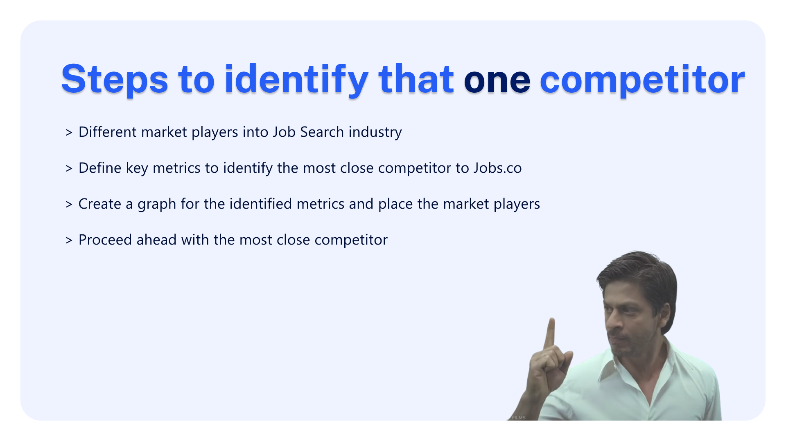
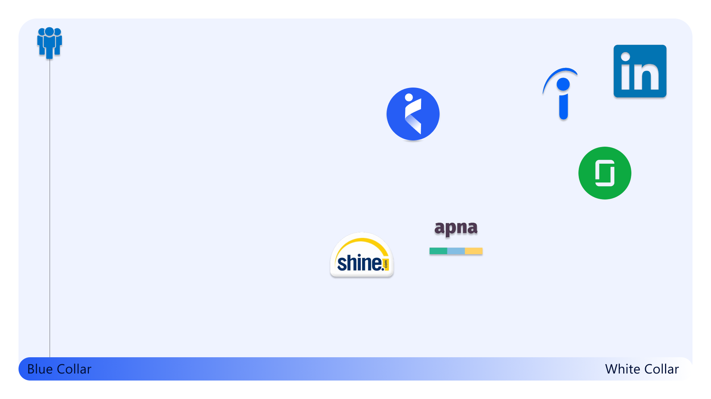
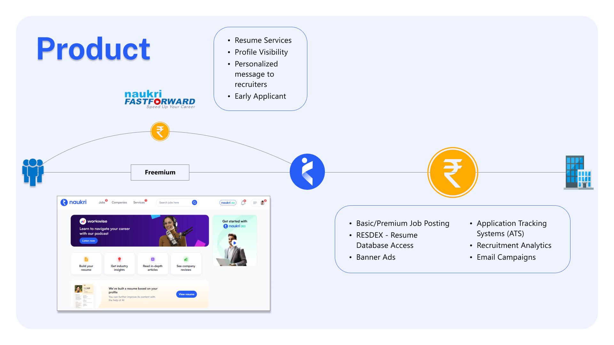
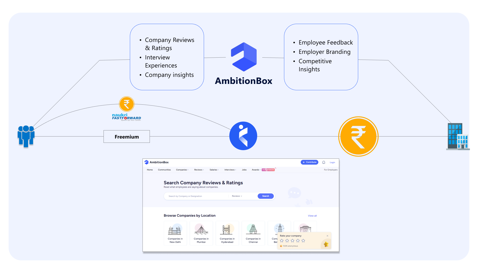
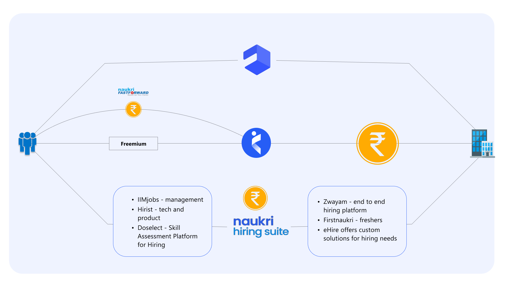
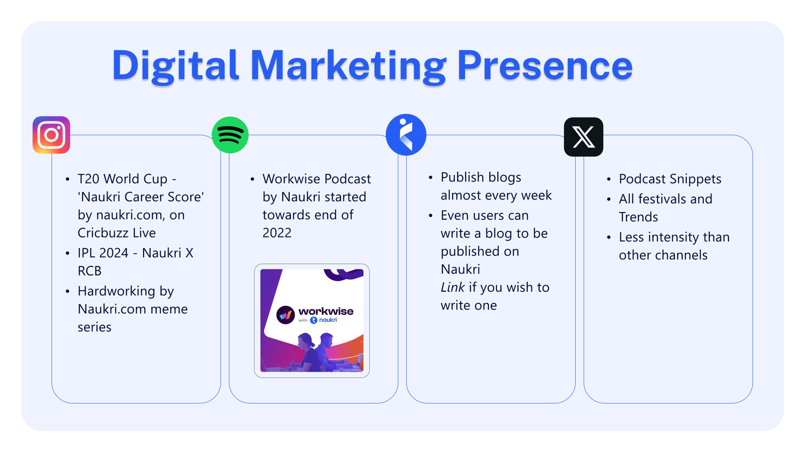

Competitor Analysis: Jobs Search Industry
Identifying one competitor in the Job Search market in India and performing a complete, end-to-end strategic product analysis.
First, identify a competitor in the job market domain. We need to find a competitor to jobs.co. Analyze the competitor based on the following points: product, business, digital platform, and growth tactics. I have assumed that jobs.co is based in Mumbai and is either in the job search market or trying to enter it.
I will follow the seven steps to complete the task.
That ONE Competitor
Identifying a strong competitor is crucial, especially one in a comparable market that we aspire to compete in. To achieve this, we'll first identify all market players in the job search industry. Next, we'll define key metrics to determine the closest competitor. These metrics will help us define the target audience and create a graph to visualize and compare market players. From this analysis, we'll identify the closest competitor and proceed with a detailed analysis of that competitor.

To identify the two metrics that define our target audience, we'll create a graph with these metrics and place the market players accordingly to identify the closest competitor. For the Indian audience, the two key metrics are pay grade salary and market penetration.
Let's look at the chart for better clarity. The y-axis represents market penetration, increasing towards the top. The x-axis represents salary grade, ranging from blue collar to white collar jobs. Blue collar jobs are non-desk, clerical, or labor roles, while white collar jobs are office-based, such as corporate positions.
I've placed these competitors based on market research. The reason for choosing salary pay grade as a metric is because a large part of the Indian population is divided between blue collar and white collar jobs. Understanding this division is crucial to targeting our Indian audience and identifying the competitor that has best penetrated the Indian market.
Here are the six competitors we're examining: LinkedIn, Indeed, Glassdoor, Naukri, Apna, and Shine. LinkedIn is at the top for white collar jobs due to its strong social media community, where many applicants hyperlink their LinkedIn profiles in their resumes. Indeed, another global platform, primarily focuses on white collar jobs and has less penetration in blue collar roles.

Key Finding: Indian companies like Naukri.com have successfully penetrated the Indian market, particularly with blue collar jobs. Therefore, when identifying the competitor that has a stronghold on the Indian audience, Naukri stands out. We will now focus our analysis on Naukri.
Naukri.com Profile
Naukri.com is a recruitment platform that provides hiring services to corporates and recruiters. It helps job seekers find jobs in India and overseas, with a major focus on India. The platform offers additional products such as a resume database, job listings, and response models.
The target audience is primarily the Indian market. Naukri.com has a strong understanding of local preferences and has created a tech product that delivers value to this audience. This has helped Naukri.com build a substantial job seekers database, attracting more recruiters and job seekers to the platform.
Customer reviews indicate that the platform is well-received. According to SEMrush, the website has a rating of 82 out of 100. On the Google Play Store and App Store, Naukri.com has a rating of around 4.6, with reviews in the hundreds of thousands, reflecting strong customer satisfaction.
Customer Problem
What core problem is Naukri.com trying to solve in India? It aims to address the fundamental job search challenge of matching employees with employers across various industries, job roles, and segments.
Product Ecosystem
Naukri connects employees with employers through various features and services. Here's a detailed look at how it works:

For Job Seekers:
- Profile Creation: Job seekers can create a profile, upload their resume, and list their skills, experiences, degrees, certifications, and achievements.
- Job Search: Users can search and apply for relevant jobs on the platform.
- Naukri FastForward: A premium service offering enhanced resume visibility and personalized messaging to recruiters, increasing the chances of landing a job.
Given India's high unemployment rate, this enhanced visibility is crucial for job seekers to stand out among thousands of applicants for a single job.
For Recruiters:
- Job Postings: Recruiters can post jobs, with pricing varying based on the type and location of the job.
- Resdex: A resume database access service allowing recruiters to filter and download resumes based on their requirements.
- Banner Ads: Advertisements for job postings to premium users.
- Applicant Tracking System (ATS): Useful for large corporates, it tracks job postings, applications, candidate skills, and provides recruitment analytics.
AmbitionBox Integration
Acquired by Naukri.com, this free platform is similar to Glassdoor, acting as a critical trust-building mechanism.

- It provides company reviews, ratings, and interview experiences shared by employees.
- Helps potential job seekers gain insights into companies and assists companies in improving their brand image and performing competitive analysis.
Naukri Hiring Suite
Naukri.com has made several strategic acquisitions to enhance its offerings and build a comprehensive recruitment ecosystem:

- IIMjobs: Focuses on hiring top management professionals.
- Hirist (Highre): Specializes in tech and product roles.
- DoSelect: A skill assessment platform for hiring.
- FirstNaukri: Targets hiring fresh graduates from across India.
- eHire: Offers custom recruitment solutions for companies without an in-house hiring team.
These acquisitions form a comprehensive suite of tools and services designed to create a complete job search ecosystem, solving the core problem of connecting employees with employers.
Digital Marketing Presence
Naukri.com has a strong digital marketing presence, especially on platforms like Instagram, Spotify, and their own website. Here's an overview:

- Collaborations: Naukri.com collaborates extensively on Instagram. For example, they partnered with Cricbuzz Live for the "Naukri Career Score" campaign. Cricbuzz frequently posts cricket-related content in partnership with Naukri.com, increasing brand visibility.
- RCB Partnership: During the IPL season, they collaborated with the Royal Challengers Bangalore (RCB), leveraging India's love for cricket to strengthen their market presence.
- Content: Naukri.com posts memes, corporate jargon clarifications, and other engaging content under the "Hardworking by Naukri.com" series, attracting more followers and boosting user engagement.
Spotify
- Workwise Podcast: Launched in late 2022, this 30-minute podcast targets a younger audience and covers various work-related topics. While the podcast itself has a modest listener base, snippets and reels from the episodes are shared on Instagram, Facebook, and Twitter, significantly increasing engagement and brand awareness.
Website Blogs
- Blogs: Naukri.com publishes weekly blogs on various corporate topics, enhancing their SEO. Users can also contribute blogs, which they can share on other platforms, driving more traffic to Naukri.com.
Twitter Presence
- Posts: While not as heavily focused on Twitter, Naukri.com shares posts about festivals, trends, and snippets from their podcast. This strategy supports their presence in the short-form content-dominated digital market.
Overall, Naukri.com's strategic use of social media and content marketing helps them effectively engage with their audience and strengthen their brand presence in the digital space.
SWOT Analysis
Evaluating the market leader reveals strategic gaps that Jobs.co can exploit as a nimble challenger, particularly focusing on Naukri's geographic concentration and pricing structure.
- Deep Market Penetration: Strong presence in the Indian market, making it difficult for competitors to overtake them.
- Diverse Job Categories: Platform offers a wide range of job categories, from blue-collar to white-collar, attracting a broad audience.
- Technological Integration: Recent acquisitions and advancements have strengthened the ecosystem, enhancing user experience.
- Geographic Dependence: Highly focused on the Indian market, making it vulnerable to local economic conditions.
- Revenue Dependence: Heavy reliance on recruitment and job posting fees, which can be affected by fluctuations.
- Global Expansion: Expanding beyond India presents a significant growth opportunity.
- Diversification: High potential for further revenue diversification through recent acquisitions.
- Technology Advancements: Leveraging AI to improve job matching, search, and overall user services.
- Economic Instability: Local economic fluctuations can directly impact recruitment activity and revenue.
- Emerging Competitors: New competitors and tech innovations can disrupt Naukri.com's market position.
- Regulatory Changes: Compliance with evolving regulations is essential concerning employee rights and recruitment.
Naukri.com must continue to innovate and adapt to maintain its leading position in the job search market, while also exploring opportunities for growth and diversification.
Strategy & Future Outlook
Looking ahead at Naukri's strategies for the near future, here are the key focus areas:
- Technological Advancements: Continuous investments in strong data science and machine learning capabilities to build advanced matching tools.
- Expansion of Recruitment Solutions: Accelerating portfolio market penetration towards the goal of becoming a "Complete Career Support Platform."
- Social Media Campaigns Targeting Gen Z: Engaging younger demographics through dedicated branding and visual media pipelines.
- Preparing for Job Market Disruptions: Mitigating shifts highlighted by reports like the World Economic Forum's Future of Jobs, which predicts displacements or disruptions to ~23% of global jobs.
These strategies underscore Naukri's proactive approach to enhancing their platform, expanding their market reach, and preparing for future challenges in the job market landscape.